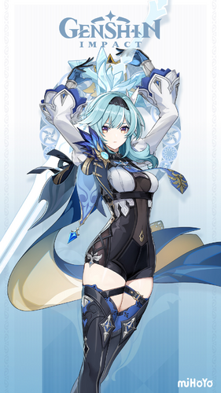
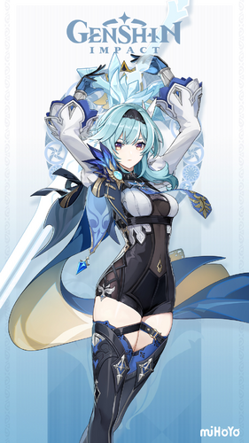
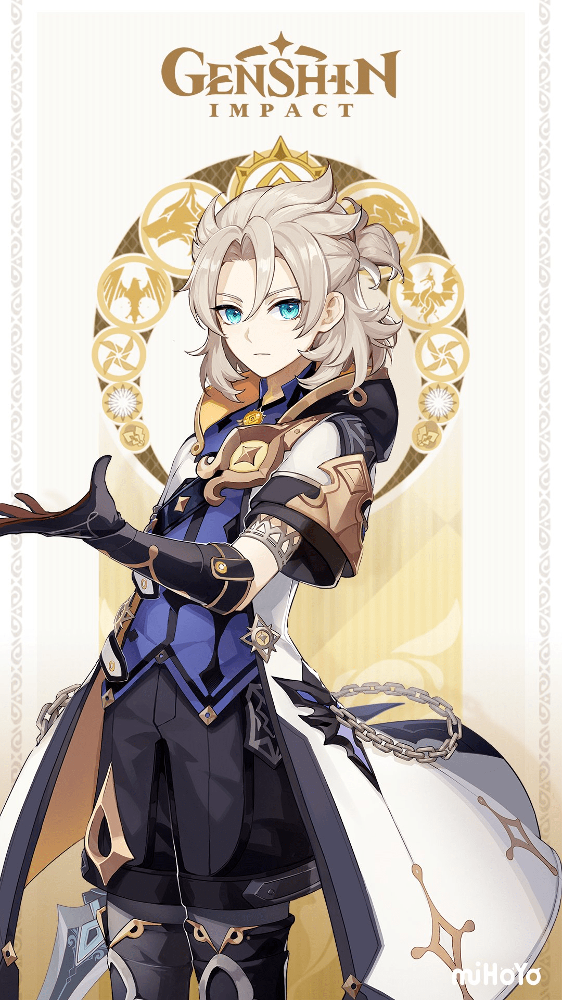
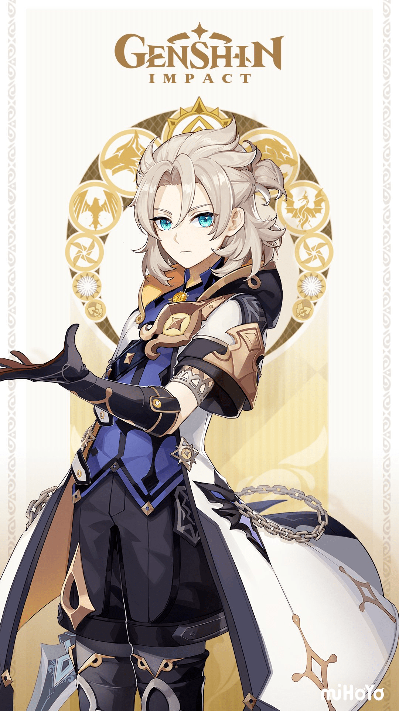
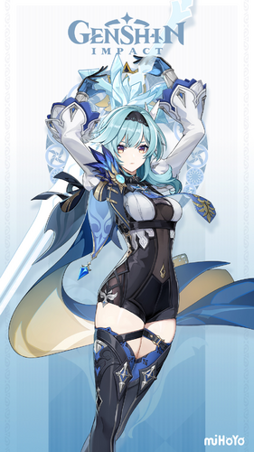
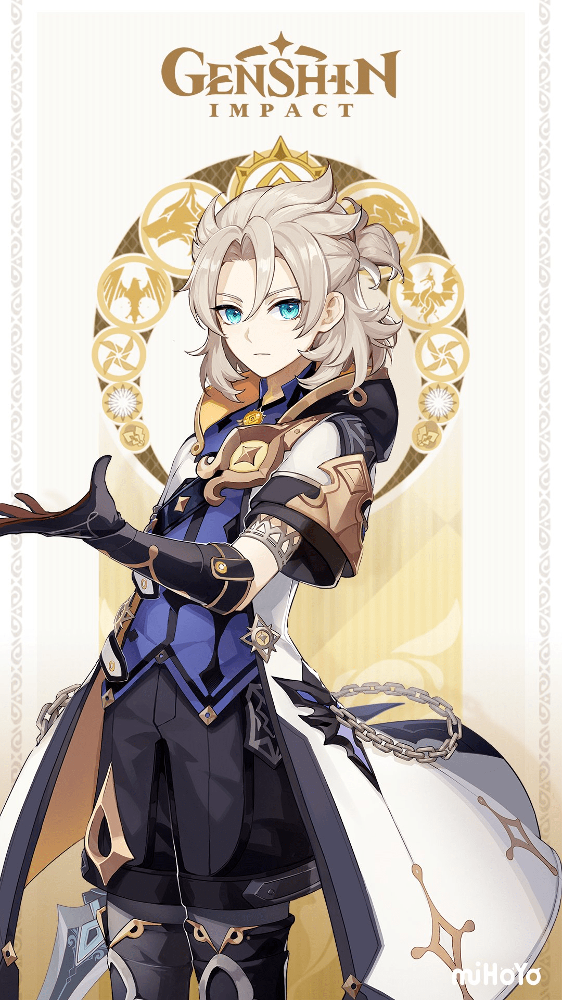

 

You get to meet these characters.


| Venti | Diluc | Eula | Mona | Albedo |
|---|---|---|---|---|
| Venti is a 5-Star Anemo Bow user. He is a bard in Mondstadt and the human form of Barbatos, the Anemo Archon. He has a playful personality and loves to drink in the Dawn Winery. Venti does not mind revealing that he is the Anemo Archon, if it means he can help. | Diluc is a 5-Star Pyro Claymore user. He owns the Dawn Winery and is a nobleman born into the Ragvindr Clan. He despises the Knights of Favonius but, continues to protect Mondstadt. He just has his own methods. | Eula is a 5-Star Cryo Claymore user. She was born into the tryannical Lawrence Clan but her attitude differs to other descendants. She is the captain of Reconnaissance Company of the Knights of Favonius. She frequently uses the term vengeance when people affiliate with her. It is nothing bad unless you did something bad to her. | Mona is a 5-Star Hydro Catalyst User. She is an astrologist of Mondstadt. She is Erudite, but prideful. She is broke, because she never uses her astrology for money. She takes her passion seriously which led to her thrifty lifestyle. | Albedo is a 5-Star Geo Sowrd user. Albedo is a synthetic human made by the alchemist Rhinedottir. Albedo is the Chief Alchemist and Captain of the Investigation Team of the Knights of Favonius. He has Sucrose as his assistant and is very interested to learn about Teyvat. He is called the Kreiderprinz. |
The video shown above showcases the Windblume Festival that Mondstadt celebrates every March. This video shows all the characters of Mondstadt at that time, (March 2021). The Windblume Festival commemorates the rebellion against the Tyrant that onced ruled Mondstadt, they used "Windblume" as their secret code.